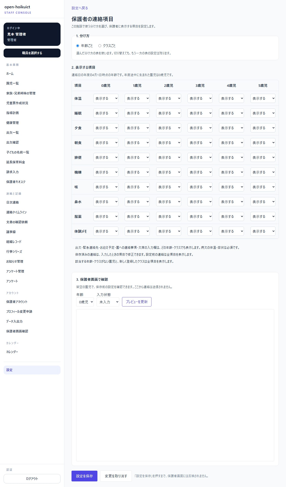
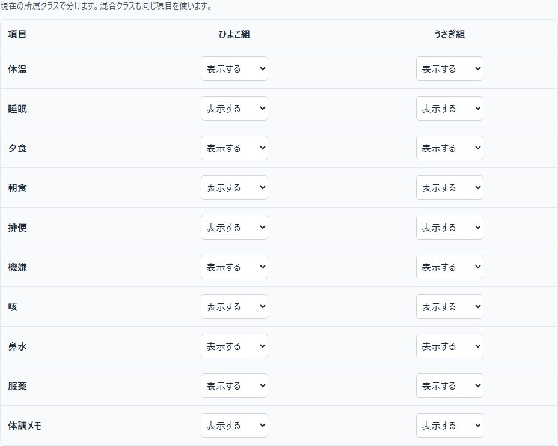
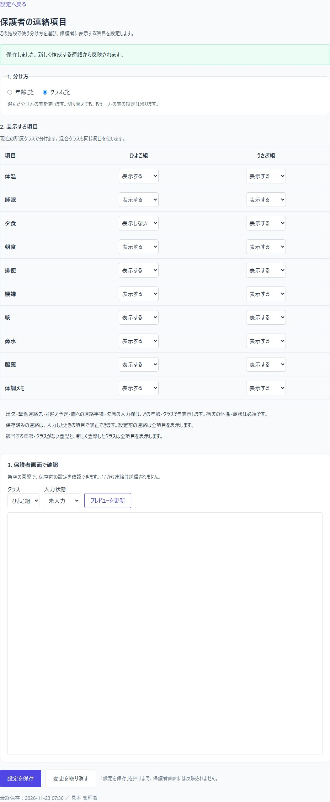

保護者の連絡項目を設定する
管理者が「設定 → 保護者の連絡項目」を開きます。施設でどの項目を使うかを決めてから、年齢またはクラスごとに設定します。
2026年11月23日に追加した手順です。画面は架空の職員・園児のデータで撮影しています。画像を押すと拡大できます。
1年齢ごとかクラスごとかを選ぶ
「分け方」で「年齢ごと」か「クラスごと」を選びます。年齢は連絡日の年度の4月1日時点で判定し、年度途中に生まれた園児は0歳児です。クラスは現在の所属で分けます。
切り替えても、もう一方の表に入力した設定は残ります。選んだ方式の表が適用されます。初期状態は全項目表示です。

2表示する項目を選ぶ
対象の年齢・クラスの列で、それぞれ「表示する」「表示しない」を選びます。表が収まらない場合は横へスクロールして全列を確認します。
出欠・緊急連絡先・お迎え予定・園への連絡事項・欠席の入力欄は常に表示します。病欠の体温・症状は必須のままです。
該当する年齢・クラスがない園児と、新しく登録したクラスは全項目が表示されます。

3保存前に保護者画面を確かめる
「保護者画面で確認」で対象の年齢・クラスと入力状態を選び、「プレビューを更新」を押します。未入力・入力済み・一部入力・エラーの見本を切り替えられます。
プレビューでは設定は保存されず、連絡も送信されません。表を変更したら、再度プレビューを更新して表示を確かめます。
4設定を保存する、変更を取り消す
確認が済んだら「設定を保存」を押し、「保存しました。新しく作成する連絡から反映されます。」を確かめます。「変更を取り消す」は未保存の変更を捨て、最後に保存した設定へ戻します。
保存済みの日次連絡は、入力時の項目で修正できます。設定を変えても過去の連絡の入力欄は一斉に切り替わりません。設定導入前の連絡は全項目表示として扱います。
別の管理者の更新と競合した場合は「最新の設定を開く」から確認し直します。
